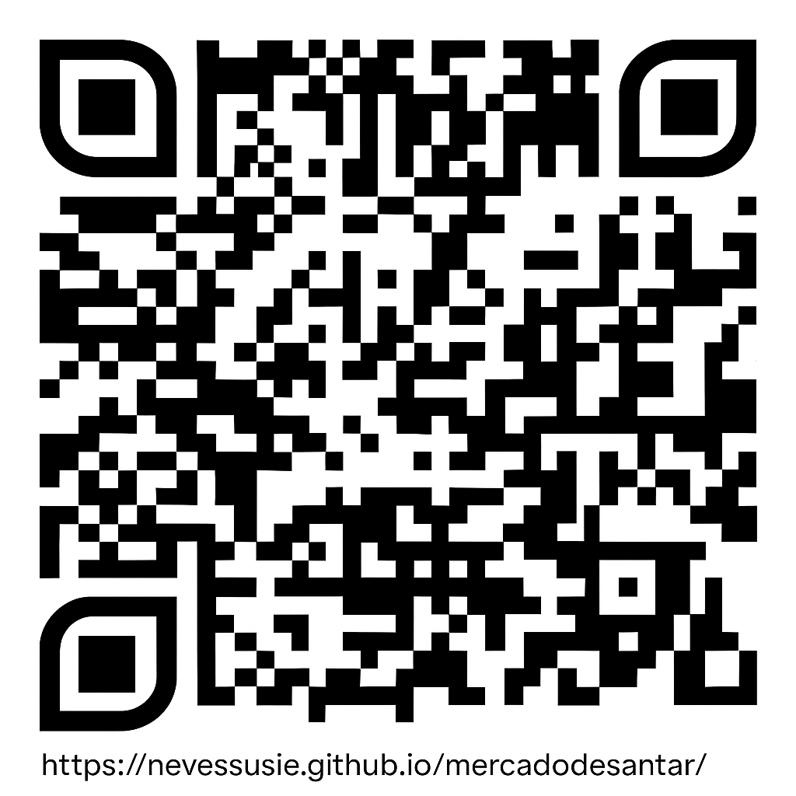

🧭 Início do mercado
🧹 Limpar rota
📱 QR do mapa
Locais do percurso
1. Rua do Estremadouro
2. Largo do Paço
3. Rua da Carreira
4. Rua Sacadura Cabral
5. Rua Direita
6. Travessa da Miragaia
7. Rua da Miragaia
8. Av. Viscondessa de Taveiro
📍 Locais
×
QR do Mapa
Scan para abrir:

https://nevessusie.github.io/mercadodesantar/